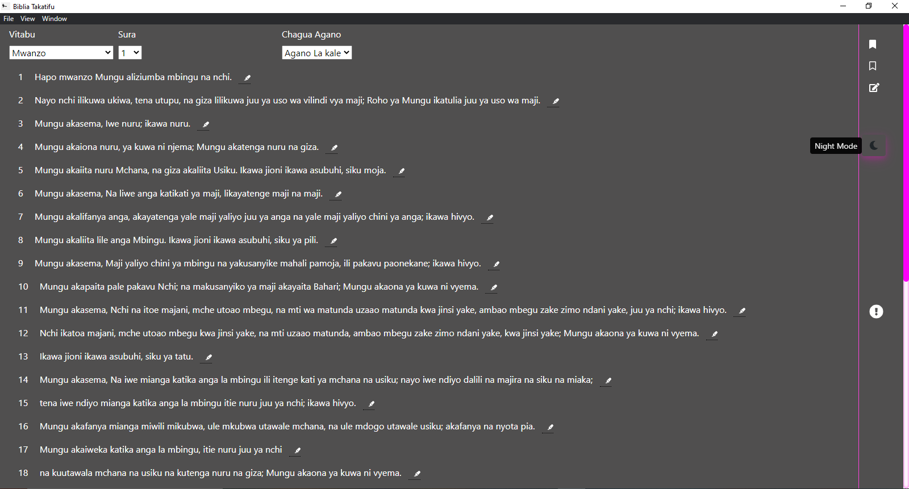
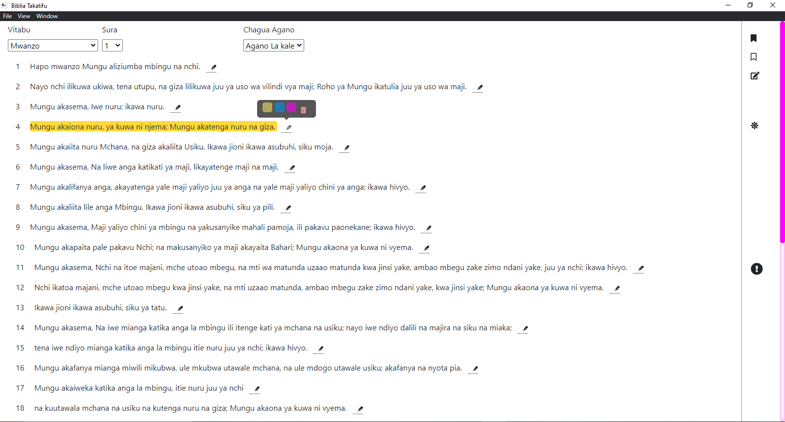
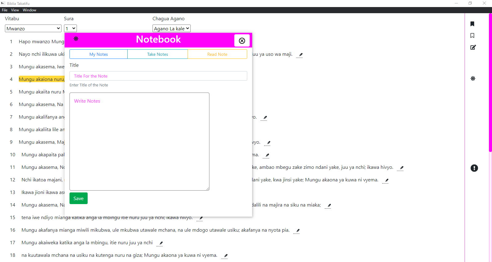
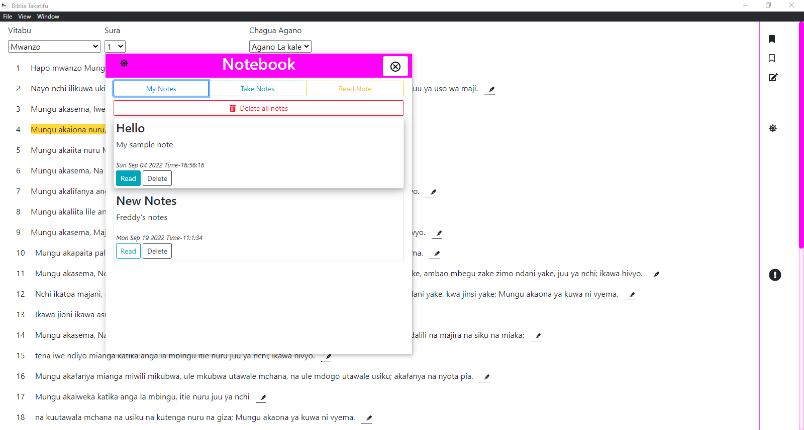
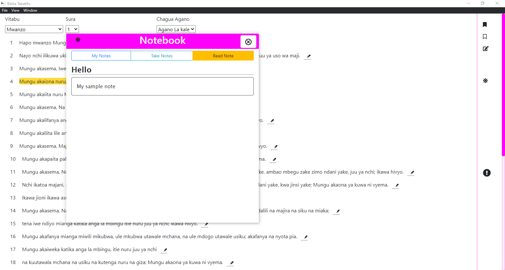

Swahili Bible
Download
Squize Your Self Closer To GOD
Swahili Bible provides you with great features to assist you on your reading.
A free
open source
Desktop application

Night Mode
Night mode feature provides eye comfort, especialy at night

Night Mode
Night mode feature provides eye comfort, especialy at night
Night Mode
Night mode feature provides eye comfort, especialy at night

Note book
Night mode feature provides eye comfort, especialy at night

Note Lists
Night mode feature provides eye comfort, especialy at night

Read View
Night mode feature provides eye comfort, especialy at night
Currently available for windows only
Windows